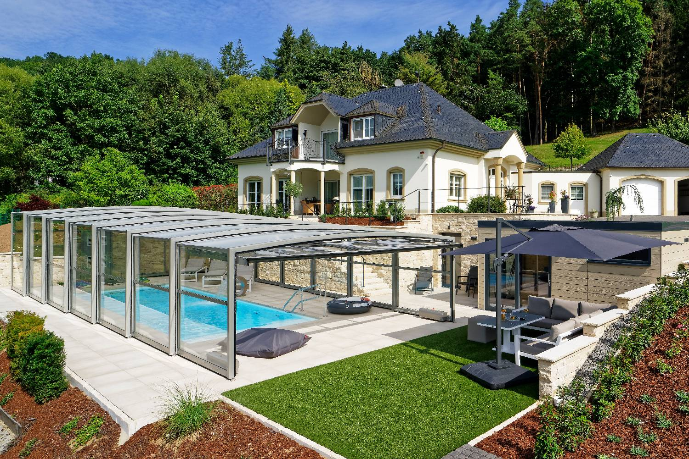

Flache Poolüberdachung
Niedrige, unauffällige Bauform — schützt zuverlässig und fügt sich dezent in jede Terrassengestaltung ein.
Mehr erfahren
Paradiso Systeme GmbH · Neuried, Südbaden
Seit 1993 fertigen wir in Neuried elegante, schienenlose Schwimmbadüberdachungen aus echtem Sicherheitsglas — leise, langlebig und von einer Person bedienbar.
Kapitel 1 · Technik
Unser eigens entwickeltes Vierfach-Führungssystem lässt die Überdachung ohne Bodenschienen teleskopieren. Keine Stolperkanten, kein Kraftaufwand — eine einzige Person öffnet und schließt die gesamte Anlage in wenigen Minuten.
Technik im Detail
Kapitel 2 · Material
Als einer von wenigen Herstellern setzen wir konsequent auf echtes Verbundsicherheitsglas (VSG) — kratzfest, hagelsicher und dauerhaft klar. Kein Vergilben, keine Trübung, auch nach Jahren nicht.
Materialien & Qualität
Kapitel 3 · Komfort
Optional mit solarbetriebenem Antrieb: Öffnen und Schließen bequem per Funkfernbedienung oder Smartphone-App, unabhängig von einem festen Stromanschluss.
Beratung anfragenUnsere Modelle
Von der flachen Abdeckung bis zum begehbaren Poolhaus — jede Überdachung wird individuell nach Maß gefertigt.
Niedrige, unauffällige Bauform — schützt zuverlässig und fügt sich dezent in jede Terrassengestaltung ein.
Mehr erfahrenBegehbare Höhe für komfortablen Zugang rund ums Becken — ganzjährig nutzbar bei jedem Wetter.
Mehr erfahrenGanzjährige Nutzung wie ein Wintergarten — feste, beheizbare Lösung für höchsten Wohnkomfort.
Mehr erfahrenWetterschutz für den gesamten Außenbereich — in derselben Formsprache wie Ihre Poolüberdachung.
Mehr erfahrenWarum Paradiso
Gegründet 1993 von Brigitte und Karlheinz Fels, heute geführt von den Söhnen Boris (Vertrieb & Marketing) und Carsten Fels (Technik & Fertigung) — Paradiso fertigt und montiert jede Anlage mit eigenen Fachkräften direkt am Standort Neuried, Lieferung und Montage europaweit.
Mehrfach unter den besten Herstellern Europas ausgezeichnet, zuletzt 2025 mit Gold und Silber.
Jede Überdachung wird individuell nach Maß in Neuried gefertigt — keine Konfektionsware.
Wir beraten Sie unverbindlich zu Modell, Maßen und Montage — persönlich, aus Neuried.
Jetzt Kontakt aufnehmen